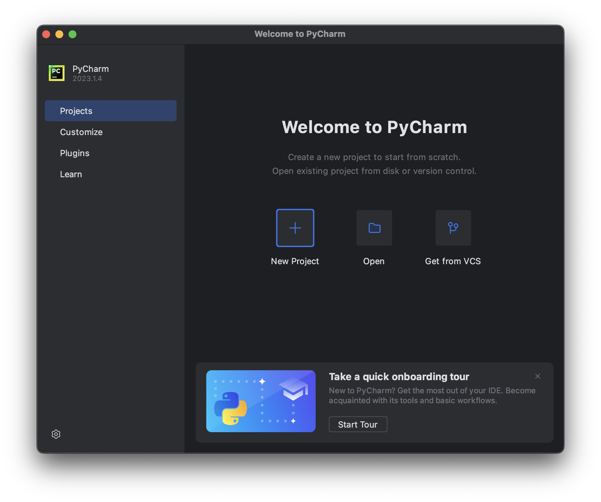
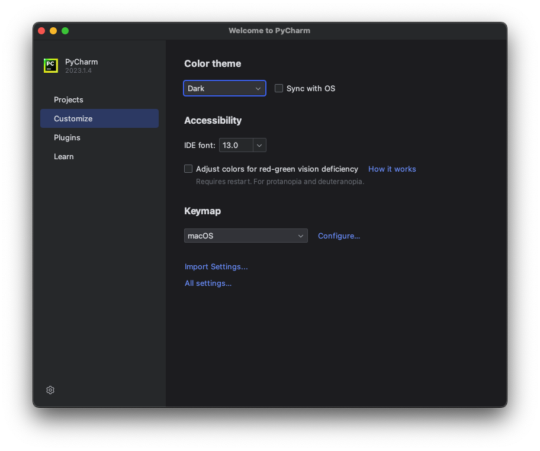
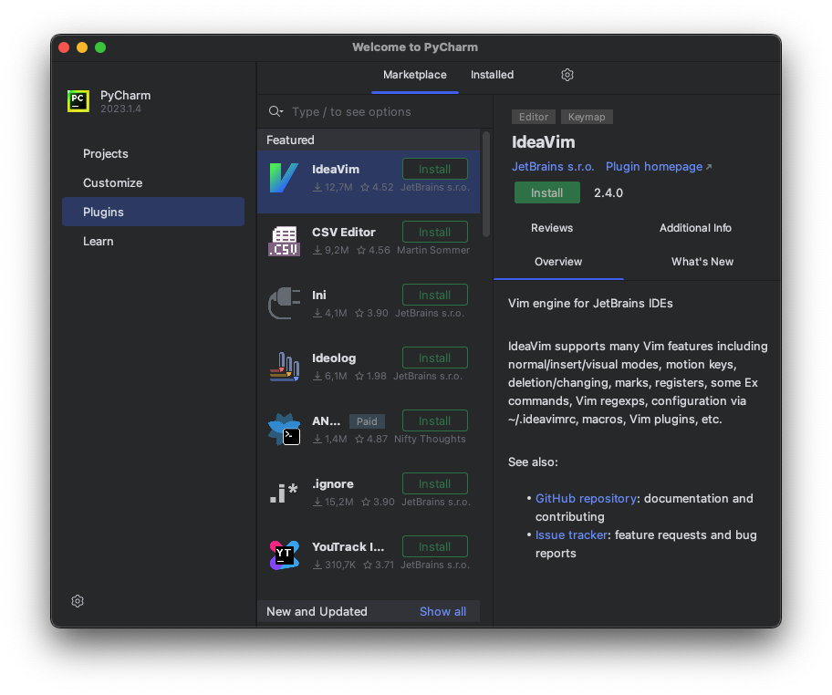
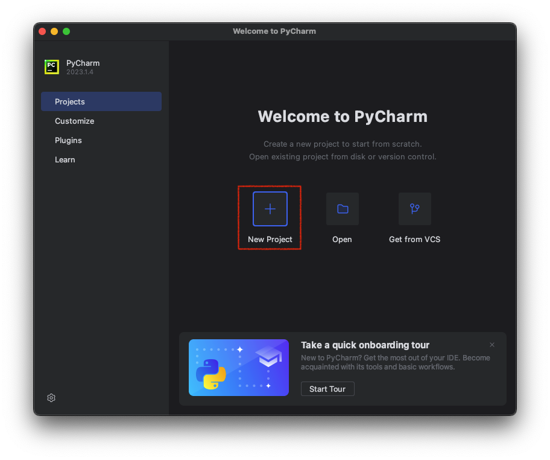
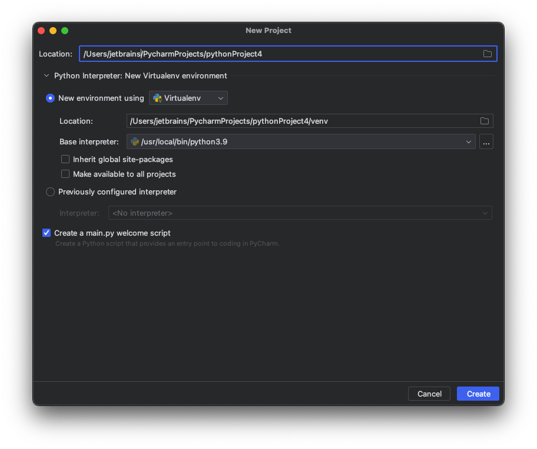
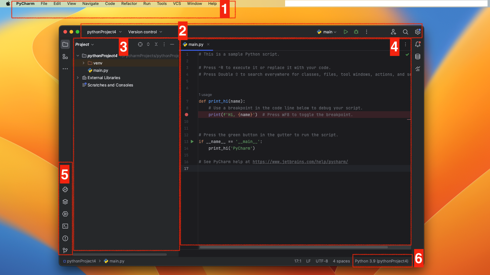
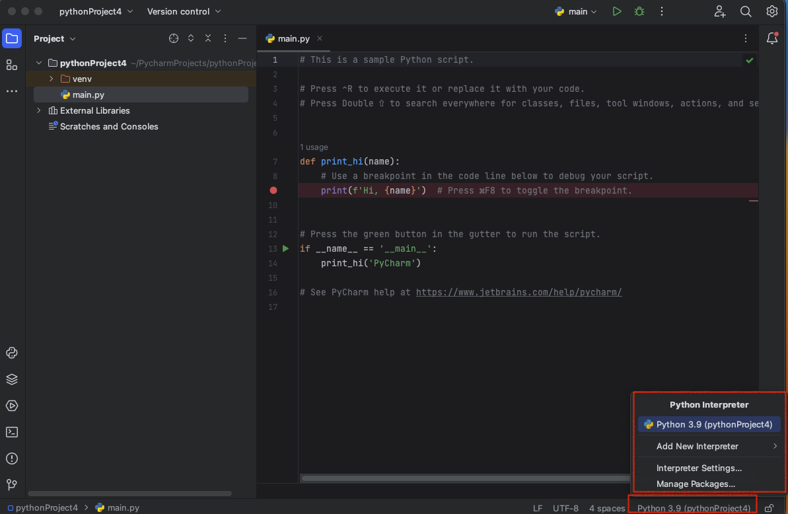
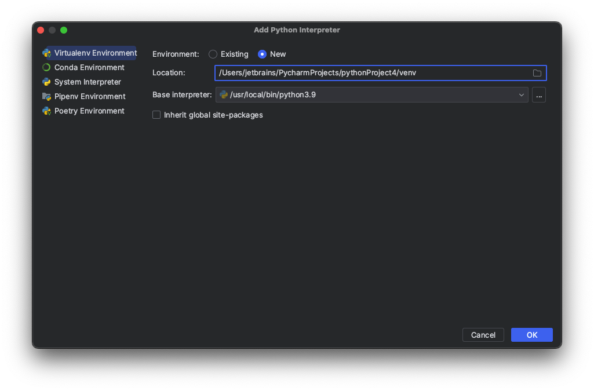
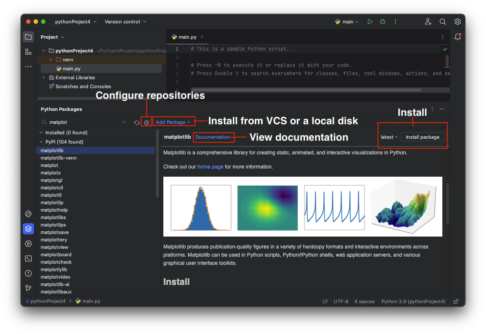

Pycharm basics
Theory
When you start programming, an Integrated Development Environment (IDE) can help with the main developer workflows allowing you to keep focusing on the language specifics. We encourage you to use PyCharm for your Python projects. PyCharm is a dedicated Python IDE that provides a variety of useful features like code completion, code inspections, project navigation, and refactorings.
§1. Overview
PyCharm is available in two editions: Community and Professional. The Community edition is free and open-sourced. It comes with everything you need for smart and intelligent Python development, including code assistance, refactorings, visual debugging, and version control integration. PyCharm Professional is a paid version of PyCharm that is aimed at professional Python, web, and data science development. With PyCharm Professional, you can create web framework applications, develop remotely, analyze big data, and work with Jupyter notebooks. See more details about each edition on the PyCharm product page.
§2. Install and run PyCharm
Before you start, check the requirements for memory and operating systems in the PyCharm System Requirements.
Install Python
PyCharm is a Python-specific IDE, so you need some Python to start your work. Download it from python.org, then install it according to your operating system requirements.
Download and install PyCharm
- Download PyCharm Community from https://www.jetbrains.com/pycharm/download.
- Run the installer and follow the wizard steps. See more details in the PyCharm Installation Guide.
Note that you can opt for a standalone installation or Toolbox App that is helpful when you need to install several JetBrains IDEs or handle multiple versions of PyCharm.
Launch PyCharm
To launch PyCharm, perform the following action depending on your operating system:
- Windows: Run PyCharm using the Windows Start menu or the desktop shortcut
- macOS: Run the PyCharm app from the Applications directory
- Linux: Run the pycharm.sh shell script in the installation directory under bin
Welcome screen
Once you launch PyCharm, you will see the Welcome screen:
On the Welcome screen, you can find all options and settings to start your work in PyCharm. The quickest way is to create a new project from scratch or open an existing project from a local drive or a repository.
The start page also contains a link to the PyCharm onboarding tour that will help you get acquainted with the main developer's workflow in just 7 minutes. Take the tour to make your start even smoother.
Quick start
You can begin your work in the IDE without setting anything beforehand because PyCharm provides almost all features out-of-the-box. Nevertheless, whatever you do in PyCharm, you do in the context of a project. A project is an organizational unit that serves as a basis for coding assistance, bulk refactoring, and coding style consistency. So, you need to start with a project setup. You have the following options:
- Create a new project — create a new project in your file system and configure a Python environment using your Python installation.
- Open an existing project — open an existing PyCharm project. You can also open any folder in your file system, and PyCharm will detect any previously configured Python environment.
- Get a project from a version control system — clone a project from a Git, Mercurial, or Subversion repository.
Customized start
On the Welcome screen, you can adjust the IDE default settings. Click Customize and select another color theme or select the Sync with OS checkbox to use your system's default theme. Here you can also configure accessibility settings or select another keymap.
You can also click All settings to open the settings dialog. The settings that you modify at this moment will become the new default configuration for your projects and the IDE.
Although PyCharm Community comes with all main features, you can extend them by installing plugins. Click Plugins in the left-hand pane of the Welcome screen, then download and install the required plugins from the PyCharm plugins repository.
With this, you're ready to create your first Python application.
§3. Create a Python project in PyCharm
To create a new Python project, perform the following steps:
- On the Welcome screen, select New Project: 
- In the New Project dialog, PyCharm fills all the required fields for you. The IDE will create a Python virtual environment, an isolated "quasi-" Python distribution with its available libraries, and the Python built-in package manager, which allows you to install external libraries. The Base interpreter list indicates the path to the actual Python, which you download and install on your computer. 
- Mind the Create a main.py welcome script checkbox. It is selected by default. With this option enabled, PyCharm creates a Python file with some basic code that can be a good starting point for your application.
- Click Create to complete the task.
So, at this point, you can select one type of environment: Virtual Environment (default), Conda, Pipenv, or Poetry, and create it using one of the Python interpreters installed in your system. Refer to Creating Python Projects for more details about other project options.
When the project is created, the main.py file is opened in the editor. This file shows the basic script and provides useful hints so that you can start editing code in PyCharm. For the time being, remember one of the most helpful shortcuts Shift + Shift. It opens a dialog where you can find any command, setting, code construct, or project file. Refer to Working with Source Code in PyCharm for more detail on available coding assistance.
You can add more files of various types to your project, as well as directories and Python packages. They are all listed in the Project tool window. Refer to the following PyCharm web help topic for more details about adding files and directories to a project: Populating PyCharm Projects.
You have already learned about the PyCharm editor and Project tool window. Let's look at the entire PyCharm user interface:
The main elements of the IDE UI are:
- Main menu. Its position is OS-specific;
- The navigation bar and main toolbar;
- Project tool window;
- Editor;
- Tool windows that include the Python Console and Python Packages windows;
- Python interpreter selector. It shows the environment that is currently configured for the project.
After doing this, you have created a PyCharm project and configured a Python interpreter for it. You can create more Python interpreters if you need various environments to run your scripts (for example, when you want to execute them on different Python versions).
§4. Create Python interpreters
The easiest way to open the Python interpreter settings is to click the Python Interpreter selector located in the lowest part of the PyCharm window, on its Status Bar.
- Click the interpreter selector. You should be able to see all the interpreters that have been configured to be used by all projects. 
- Select Add New Interpreter > Add Local Interpreter from the menu.
- You can see various types of interpreters in the Add Interpreter dialog: 
- You can create a new interpreter or continue to use an existing one.
For a new interpreter, select Base interpreter from the list, or click "..." and find a Python executable in your file system. For an existing interpreter, select Interpreter, or, similarly, click "..." to discover a Python executable.
If PyCharm is not able to detect Python on your machine, it provides two options: download the latest Python versions from python.org or specify a path to the Python executable (in case of non-standard installation). See more information and related procedures in Configure a Python Interpreter in PyCharm.
When you save the changes, the newly created interpreter is set for the current project.
The key point for creating different isolated environments is to keep different sets of Python packages. So, let's learn how to install packages in PyCharm.
§5. Install Python packages
The Python Packages tool window provides the quickest and neat way to preview and install packages for the currently selected Python interpreter.
To install a package from the default repository:
- Type the package name in the Search field of the Python Packages tool window.
- Locate the package in the list of the default repository
- Click the Install button in the upper-right corner of the tool window
For more details about installing Python packages, see Install, Uninstall, and Upgrade Packages in PyCharm.
§6. Conclusion
To sum up:
- PyCharm is a Python-specific IDE. It has two editions: Community (free) and Professional (30-day free trial).
- To install PyCharm, download an installer from https://www.jetbrains.com/pycharm/download.
- The Welcome screen provides a quick way to create, open, or clone a Python project.
- You can customize your IDE with PyCharm settings.
- To start your way in PyCharm, you need to create a project, configure a Python virtual environment (Python interpreter), and add your Python code to the main.py file or to other Python files.
- PyCharm allows you to configure various Python interpreters depending on your operating system and edition of PyCharm.
- With the Python Packages tools window, you can quickly install packages on the selected Python interpreter.
- Find more details and specific procedures in the PyCharm Web Help.
You can also view Lesson on hyperskill.org.
Practical tasks and answers
Tasks and answer options are given. The correct option is highlighted in blue color.
№1. Launch PyCharm
Question: Although you might have a preferred OS at home or the one you're required to work with at work, sometimes in programming practice, there is a need to switch at some point to another OS for checking or verification. You have to be prepared, so match the OS to the corresponding PyCharm launch method.
Match the items from left and right columns:
- Windows - Start menu\desktop shortcut
- macOS - Run the app from Applications directory
- Linux - Run pycharm.sh script in installation directory
Explanation. Here are the explanations:
- Windows: PyCharm can be launched from the Start menu or by using the desktop shortcut that is created during installation.
- macOS: PyCharm can be launched by running the pycharm.sh shell script in the installation directory. This script is located in the bin directory of the PyCharm installation.
- Linux: PyCharm can be launched by running the pycharm.sh shell script in the installation directory. This script is also located in the bin directory of the PyCharm installation.
№2. Functionality
Question: Take a look at the two lists below and match each PyCharm edition with a description of its functionality. Note that though their features are different, all editions are suitable for completing our projects.
Match the items from left and right columns:
- PyCharm Community - Free and open-sourced; comes with everything you need for smart and intelligent Python development, including code assistance, refactorings, visual debugging, and version control integration.
- PyCharm Professional - Paid version of PyCharm that is aimed at professional Python, web, and data science development. With it, you can create web framework applications, develop remotely, analyze big data, and work with Jupiter notebooks.
№3. Know how to find!
Question: To change the UI theme, you would go to...
Select one option from the list:
- View | Appearance
- File | File Properties
- File | Settings/Preferences | Appearance & Behavior ✔
- File | Manage IDE Settings
Explanation. The correct answer is File | Settings/Preferences | Appearance & Behavior.
To change the UI theme in PyCharm, follow these steps:
- Open the Settings/Preferences dialog (Ctrl+Alt+S).
- In the left sidebar, expand the Appearance & Behavior section.
- Click the Appearance tab.
- In the Theme list, select the desired theme.
- Click the Apply button.
The new theme will be applied to the IDE. The other options are not correct.
- View | Appearance only allows you to change the font size and line spacing.
- File | File Properties is used to set the properties of a file.
- File | Manage IDE Settings is used to manage the IDE settings, such as the keymap and the shortcuts.
№4. General working algorithm
Question: We have discussed how to start working in PyCharm. What are the general steps you need to follow in order to make your first project?
Put the items in the correct order:
- Download and install PyCharm;
- Launch PyCharm;
- Create a new project;
- Write the code;
- Run the program;
Explanation. The correct order of the steps to create your first project in PyCharm is:
- Create a new project.
- Write the code.
- Run the program.
The following are the steps in detail:
- Launch PyCharm.
- In the Welcome screen, click Create New Project.
- In the New Project dialog, specify the project name and its location.
- Click Create.
- In the project window, right-click the project name and select New | Python File.
- Enter a filename for the file and click OK.
- Write the code in the Python file.
- Click the Run button in the toolbar or press Shift+F10 to run the program.
The Download and install PyCharm step is not necessary if you have already installed PyCharm.
The Write the code step can be done in any order, but it is usually done after they Create a new project step.
The Run the program step is the last step, and it is what executes the code that you have written.
Here is the code that you can use for your first project:
This code simply prints the text "Hello, world!" to the console.
To run this code, follow the steps above and then click the Run button in the toolbar or press Shift+F10. You should see the text "Hello, world!" printed on the console.
№5. Installing new packages
Question: How can you install new packages in PyCharm?
Put the items in the correct order:
- Type the package name in the Search field of the Python Packages tool window;
- Locate the package in the list of the default repository;
- Click the installation button in the upper-right corner of the tool window;
Explanation. The following are the steps in detail:
- Open the Python Packages tool window (Ctrl+Alt+S).
- In the Search field, type the name of the package that you want to install.
- The package will be listed in the results. Click the Install button next to the package name.
- The package will be installed in the project interpreter.
You can also install packages from a local file or from a remote repository. To do this, follow these steps:
- Click the Add Package link on the toolbar.
- Select the source of the package.
- In the Package name field, type the name of the package.
- Click the Install button:
№6. No way
Question: What option is NOT given to you when creating a new project?
Select one option from the list:
- Open an existing project
- Create a new project
- Import it from your working email ✔
- Get a project from a version control sytem
Explanation. The option "Import it from your working email" is NOT given to you when creating a new project in PyCharm. The available options are "Create New Project", "Open", "Check out from Version Control".
№7. The main unit
Question: What is the main organizational unit called in PyCharm?
Select one option from the list:
- Module
- Distribution
- Package
- Project ✔
Explanation. The main organizational unit in PyCharm is called a project. A project is a collection of files and folders that are related to a specific Python application. It can contain source code, configuration files, test files, and other resources.
A project is created by opening the New Project dialog (Ctrl+Shift+N). In the dialog, you can specify the project name, location, and interpreter. Once a project is created, you can start working on your Python application. You can create files, edit files, run the application, and debug the application.
The other options are not correct.
- Module: A module is a Python file that contains definitions of functions, classes, and variables.
- Distribution: A distribution is a collection of modules that are packaged together for distribution.
- Package: A package is a collection of modules that are organized in a hierarchical structure.
№8. Find the action
Question: What shortcut will prompt a dialog where you can find any command, setting, code construct, or a project file?
Select one option from the list:
- Ctrl + E
- Ctrl + Shift + Enter
- Shift + F2
- Shift + Shift ✔
Explanation. The shortcut that will prompt a dialog where you can find any command, setting, code construct, or a project file is Shift + Shift.
This shortcut opens the Find Action dialog, which allows you to search for anything in PyCharm. You can search for commands, settings, code constructs, files, and even text in files.
The other options are not correct.
- Ctrl + E opens the Recent Files dialog.
- Ctrl + Shift + Enter executes the current line of code or the current selection.
- Shift + F2 renames the current file or the current selection.
№9. Expending the project
Question: How can you add more files, directories, and Python packages to your project?
Select one option from the list:
- By changing a virtual environment.
- By deleting the current project, creating it anew, and adding everything at the very beginning.
- By using plugins.
- By using the Project tool window. ✔
Explanation. The correct option is By using the Project tool window.
You can add more files, directories, and Python packages to your project by using the Project tool window.
To do this, follow these steps:
- Open the Project tool window (Ctrl+1).
- Right-click the directory or package where you want to add the new files or directories.
- Select New.
- Select the type of file or directory that you want to create.
- Enter a name for the new file or directory.
You can also drag and drop files and directories from the file system into the Project tool window.
To add Python packages to your project, you can use the Python Packages tool window.
To do this, follow these steps:
- Open the Python Packages tool window (Ctrl+Alt+S).
- Click the Add Package link on the toolbar.
- Select the source of the package.
- In the Package name field, type the name of the package.
- Click the Install button.
The other options are not correct.
- Changing a virtual environment will not add files or directories to your project. It will only change the Python interpreter that is used to run your project.
- Deleting the current project and creating a new one is a drastic measure that should only be taken if you are sure that you do not need the old project anymore.
- Using plugins can be used to add functionality to PyCharm, but they cannot add files or directories to your project.
№10. Developer's tools
Question: What are the specific settings for every project provided by the virtual environment?
Select one or more options from the list:
- Python built-in package manager to install external libraries ✔
- Python version with its available libraries ✔
- Code style
- UI themes
- Shortcuts
Explanation. The specific settings for every project provided by the virtual environment are:
- Python version with its available libraries: A virtual environment allows you to install different Python versions and libraries for different projects. This prevents conflicts between different projects that require different versions of Python or libraries.
- Python built-in package manager to install external libraries: The Python built-in package manager, pip, can be used to install external libraries in a virtual environment. This is useful for projects that require specific libraries that are not installed in the system Python.
The other options are not specific to virtual environments.
- Code style: Code style is a set of rules that govern the formatting of code. It is usually defined in a style guide. Code style can be configured for a project, but it is not specific to virtual environments.
- UI themes: UI themes are used to change the appearance of the IDE. They can be configured for a project, but they are not specific to virtual environments.
- Shortcuts: Shortcuts are keyboard combinations that are used to perform actions in the IDE. They can be configured for a project, but they are not specific to virtual environments.
Here are some additional benefits of using virtual environments:
- They can help to isolate problems caused by incompatible library versions.
- They can help to keep your system Python clean and uncluttered.
- They can make it easier to share projects with others.
If you are working on multiple projects that require different Python versions or libraries, I recommend using virtual environments. They can help to make your development process more efficient and organized.
What is PyCharm IDE? Briefly explain the basic usage of PyCharm.
PyCharm is an integrated development environment (IDE) used for programming in Python. It is developed by JetBrains and is available for Windows, macOS, and Linux.
PyCharm provides a variety of features to help programmers write, debug, and test Python code. These features include:
- A code editor with syntax highlighting, code completion, and linting
- A debugger with breakpoints, step-by-step execution, and variable inspection
- A built-in terminal for running Python commands
- A version control system integration
- A testing framework
To use PyCharm, you first need to create a new project. You can do this by going to File > New > Project. In the New Project dialog, select the type of project that you want to create and specify the project name and location.
Once you have created a project, you can start writing code. PyCharm provides a code editor with syntax highlighting, code completion, and linting. This means that PyCharm will highlight errors in your code, suggest completions for words that you are typing, and warn you about potential problems.
To run your code, you can click the Run button in the toolbar or press Shift+F10. PyCharm will compile and run your code in the Python interpreter. If you want to debug your code, you can use the debugger. The debugger allows you to step through your code line by line and inspect the values of variables.
PyCharm also comes with a variety of other features, such as a built-in terminal, a version control system integration, and a testing framework. To learn more about PyCharm, you can refer to the documentation or watch the tutorials on the JetBrains website.
Here are some additional tips for using PyCharm:
- Use the keyboard shortcuts to save time. PyCharm has a variety of keyboard shortcuts that can be used to perform common tasks.
- Explore the settings to customize PyCharm to your liking. PyCharm has a variety of settings that can be customized to your liking.
- Use the documentation and community resources. PyCharm has a comprehensive documentation and a large community of users who can help you if you get stuck.